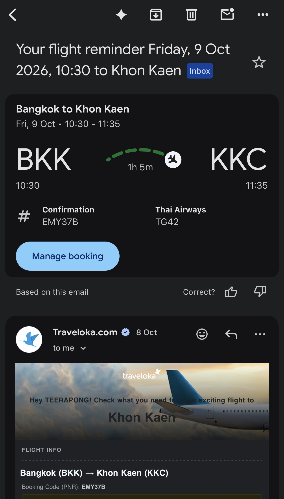
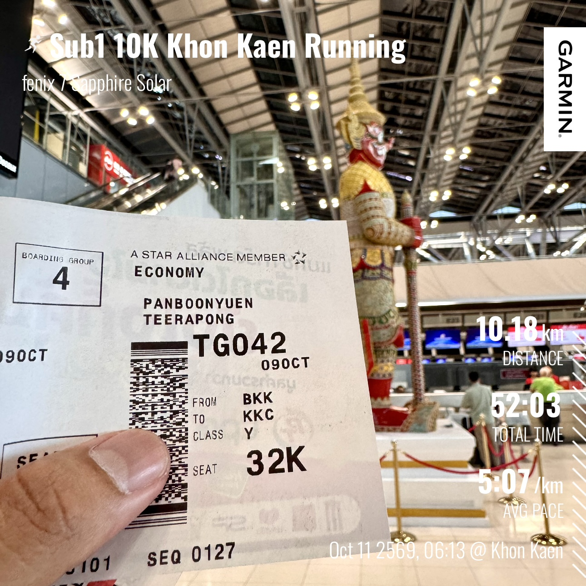
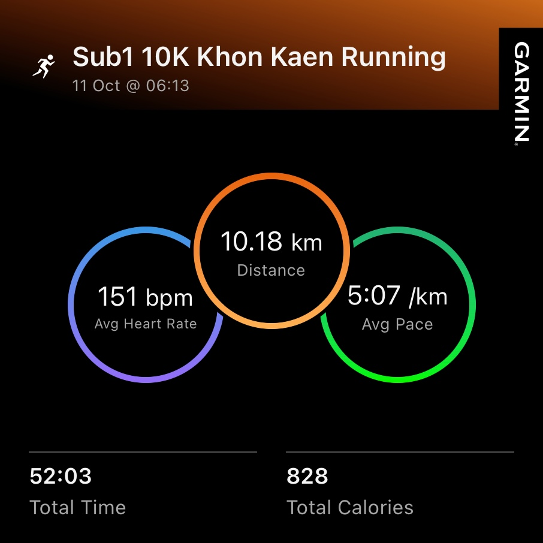
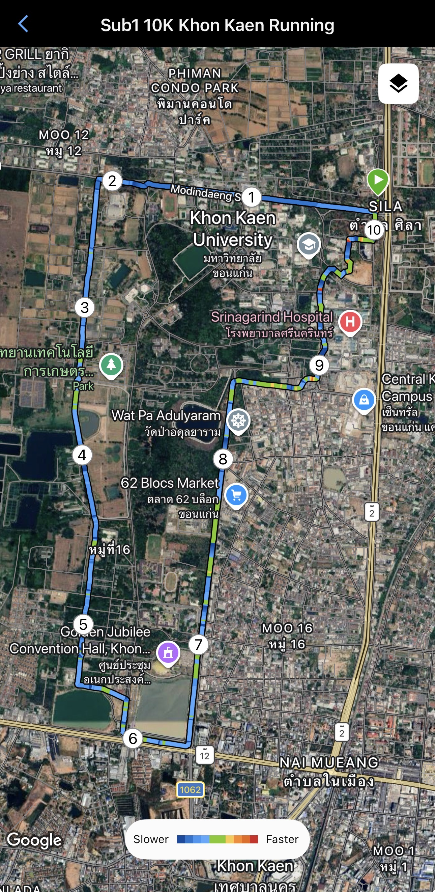
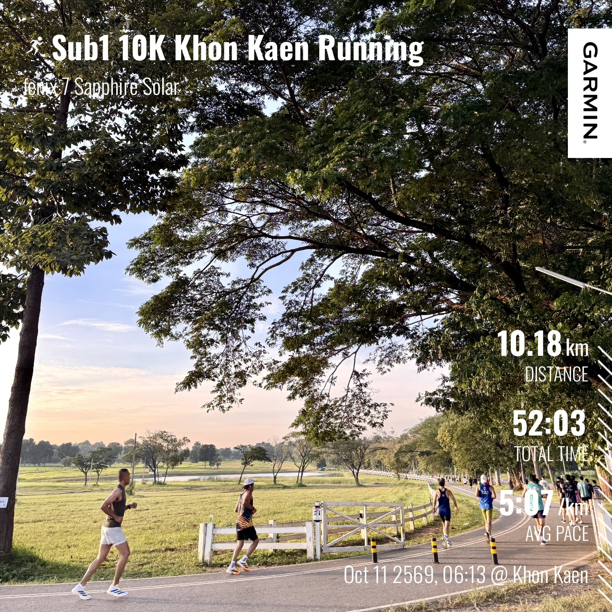
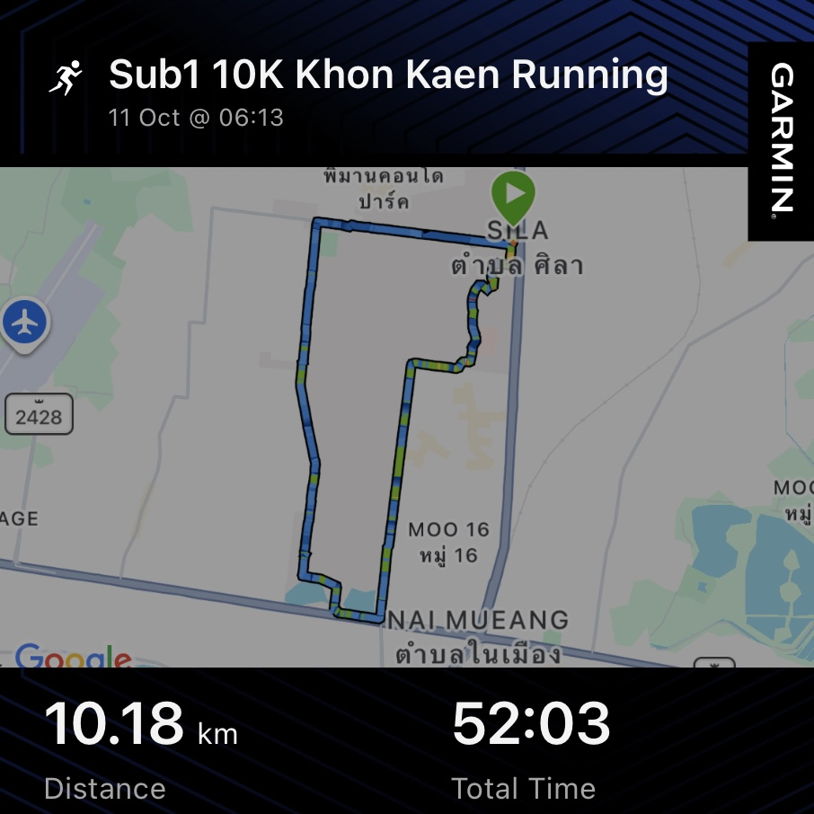
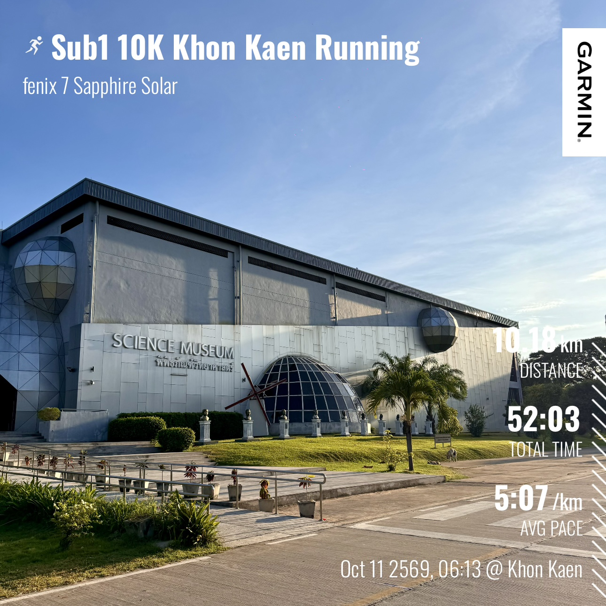
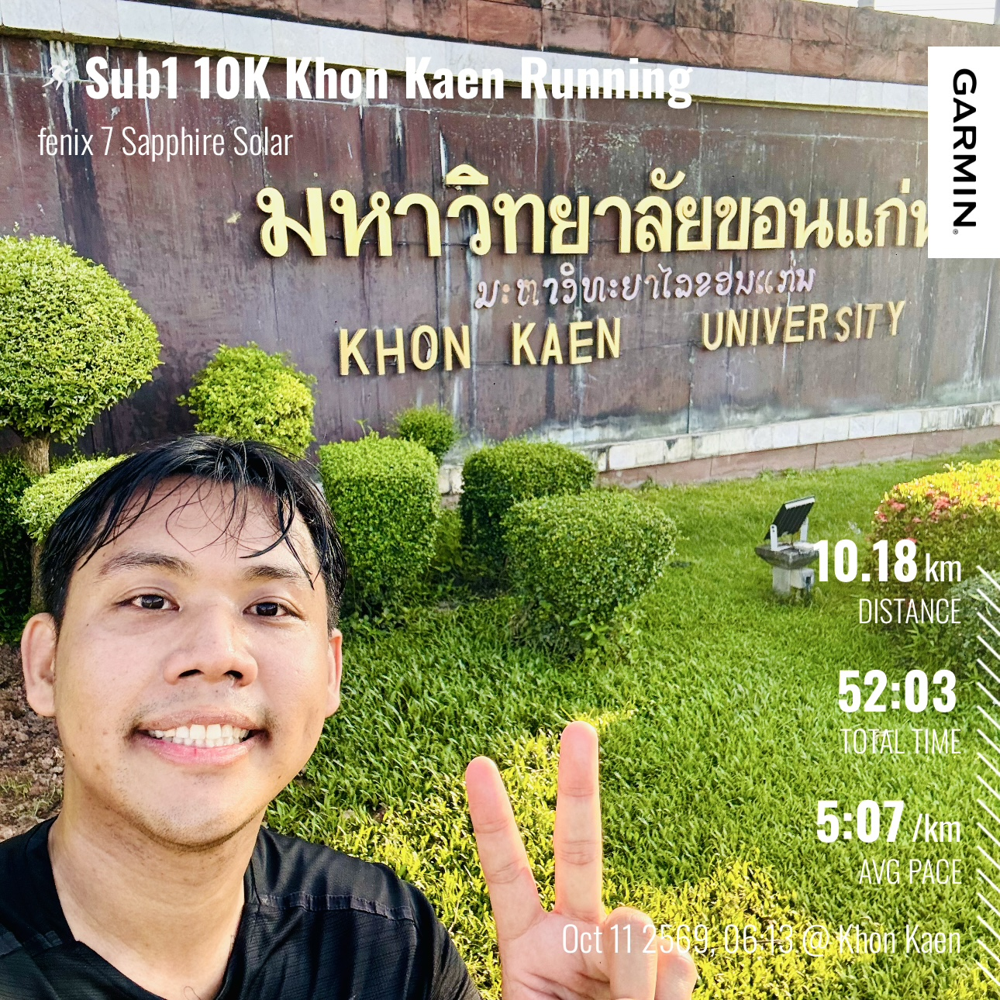
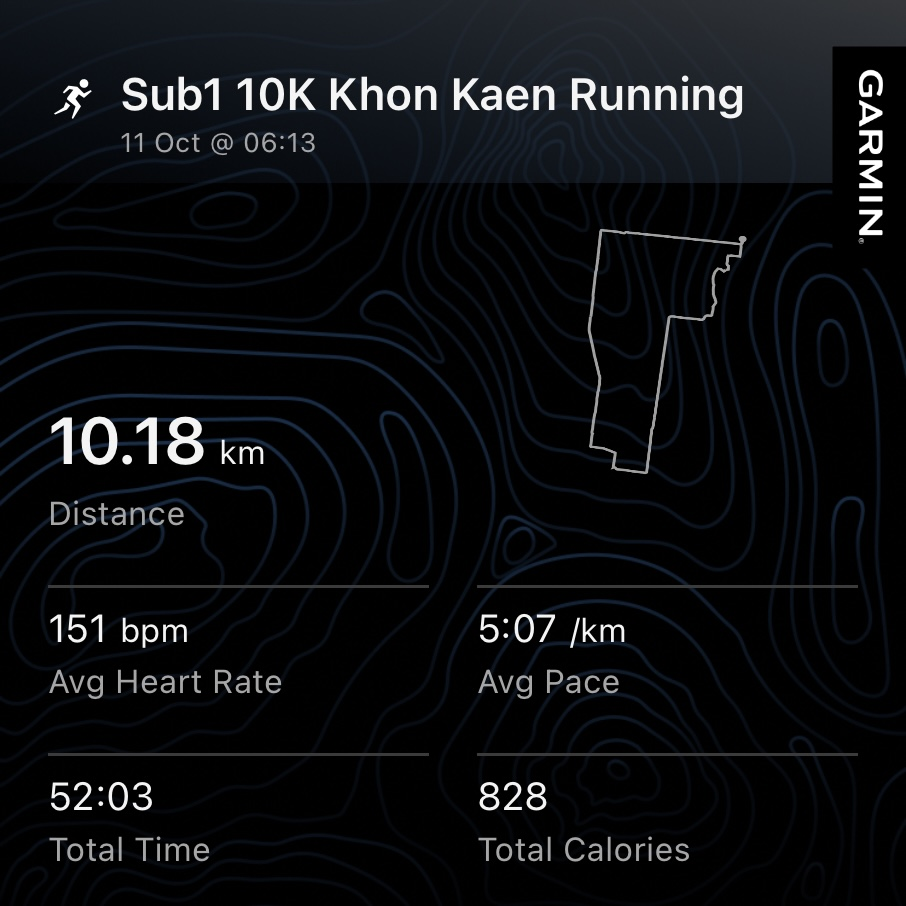
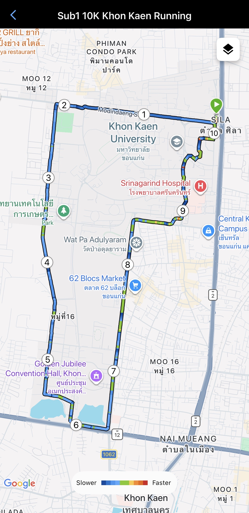

Sub-1 10K Khon Kaen City Run: A Sunday Morning at Khon Kaen University
Back at Khon Kaen University to teach AI, attend the College of Computing’s groundbreaking ceremony, and grade final AI pitches — then a 10K city run to close the trip.
 Sub-1 10K city run through Khon Kaen University and the surrounding neighborhoods, Khon Kaen, Thailand — 11 October 2026.
Sub-1 10K city run through Khon Kaen University and the surrounding neighborhoods, Khon Kaen, Thailand — 11 October 2026.
🏃 Sub-1 10K Khon Kaen City Run: Teaching AI, a Groundbreaking Ceremony, and a Sunday-Morning Loop Around Khon Kaen University
“Some trips are for the classroom. Some are for the community. And some, if you’re lucky, end with ten kilometers of quiet morning road.”
There are a few places that always pull me back, and Khon Kaen University (KKU) has become one of them. This semester I had the chance to return to the front of a classroom and teach Artificial Intelligence once again, and — as has become my little tradition every time I visit Khon Kaen — I closed the trip the way I like to close every trip: by lacing up my shoes and running the city.
This is the story of that visit: the course, the ceremony, the (slightly embarrassing) flight-booking mix-up, and a 10K city run that finished in 52:03, a comfortable sub-1-hour result on a beautiful Sunday morning.
If you enjoyed my previous city-run write-up from my first trip to Kyushu, Japan, you can read it here: Sub-50 10K Fukuoka City Run: My First Visit to Fukuoka, Japan, One Kilometer at a Time.
🎓 Teaching AI Again at Khon Kaen Business School, KKU
This term I returned to teach:
CP020003 — Artificial Intelligence (2026, Semester 1) AI Course at Khon Kaen Business School, Khon Kaen University
Teaching this course is something I genuinely look forward to. AI is moving at a speed that makes every semester feel like a different course from the last, and the best part of teaching it is watching students go from “I’ve only used these tools” to “I can actually build and reason about them.”
If you would like to follow along, everything from the semester — lecture slides, code, and course materials — is openly available on GitHub:
👉 github.com/kaopanboonyuen/CP020003_ArtificialIntelligence_2026s1
Feel free to download, fork, remix, and learn from it. Open materials are one of the simplest ways to give something back to the community, and I’d love to hear if any of it helps you.
🏗️ A Milestone for the College of Computing
This month was also special for the institution I am affiliated with, the College of Computing, Khon Kaen University. The college held the groundbreaking ceremony (foundation-stone laying) for its new computing teaching and laboratory building — a milestone that marks the beginning of a new chapter for computing education and research at KKU.
It was an honor to attend and be part of the occasion. A new building is more than concrete and steel; it is a promise of future classrooms, future labs, and future students who will build things we can’t yet imagine.
The timing worked out perfectly. The ceremony fell right around the Final Project period for my AI course, so I arranged to meet my students in person for two things in one visit:
- Final Project AI Pitching — students presented and defended their AI projects.
- Final Exam Briefing — a walkthrough of the exam format and the topics to focus on.
One trip, three missions: the ceremony, the final pitches, and the exam brief. Efficient, if I do say so myself.
✈️ The Journey: Booking the Wrong Airport (Again)
Here is the funny part. For the second time, I managed to book my ticket from the wrong airport.
My home is near Pracha Chuen in Bangkok, which makes Don Mueang the sensible choice. Instead, I found myself heading to Suvarnabhumi Airport — a very long way across the city. 😅
I took the Thai Airways TG042 from Bangkok (BKK) to Khon Kaen (KKC) on Friday, 9 October 2026, departing at 10:30 and landing at 11:35 — a short one-hour-five-minute hop.

Figure 1: The flight reminder for TG42, Bangkok (BKK) → Khon Kaen (KKC), on Friday, 9 October 2026. A one-hour flight that took me from a very long commute across Bangkok to another visit to Khon Kaen University.

Figure 2: My boarding pass at Suvarnabhumi Airport, seat 32K, with the towering guardian statue in the background. Booking from the wrong airport again was a little silly — but honestly, the longer journey made the whole trip feel more like a proper adventure.
It was a long ride to the airport, but I’ll admit I enjoyed it. There’s something about a bit of extra travel that makes a trip feel like a trip.
🌅 The Run: Sunday Morning Around KKU
With the ceremony attended and the final pitches graded, my official duties were complete. And every time I visit Khon Kaen, there is one rule: a Sub-1 city run is mandatory.
So on Sunday, 11 October, I set off at 06:13 AM for a 10K loop around Khon Kaen University and its surroundings.

Figure 3: My official Garmin statistics for the Sub-1 10K Khon Kaen Running session on 11 October at 06:13: 10.18 km distance, 52:03 total time, 5:07 min/km average pace, 151 bpm average heart rate, and 828 calories burned. A comfortable finish under one hour, in the warm morning air of northeastern Thailand.
📊 Garmin Stats — 10K Khon Kaen City Run, 11 October, 06:13 AM
| Metric | Result |
|---|---|
| Total Time | 52:03 |
| Distance | 10.18 km |
| Avg Pace | 5:07 /km |
| Avg Heart Rate | 151 bpm |
| Total Calories | 828 |
Compared with my Fukuoka run in August (48:58 at 4:51 /km), today was a touch slower — but with Khon Kaen’s warmth building steadily through the morning and a route I was happy to simply enjoy, I wasn’t chasing a personal best. The goal was Sub-1, and the watch said 52:03. Mission accomplished.

Figure 4: The route on satellite view — a rectangular loop starting and finishing near Sila, along the edge of Khon Kaen University. The color scale shows pace from slower (blue) to faster (red). Notice how the loop passes the university campus, the Golden Jubilee Convention Hall, 62 Blocs Market, Wat Pa Adulyaram, and Srinagarind Hospital before returning to the start.
🗺️ The Route: Khon Kaen, One Kilometer at a Time
I started at Sila, right beside the university’s eastern edge, in that sweet spot of the morning when the air is still manageable and the roads belong to runners, cyclists, and early risers.
KM 1 — Modindaeng Road along KKU’s northern edge. The first kilometer is always about finding rhythm. A wide, straight road along the northern side of the university gave me the perfect place to settle into an easy, sustainable pace. Legs fresh, mind half asleep, just clicking into stride.
KM 2 — The northwest corner of the loop. A turn south here took me away from the traffic and onto a much quieter stretch along the western side of the campus area. The city noise faded; the open sky took over.
KM 3 — Heading south along the west side. A long, calm road with fields and campus-adjacent green space on one side. Steady breathing, steady pace. This was the kind of stretch that makes a loop run so satisfying — nothing to think about except the next step.
KM 4 — Quiet roads and open water. Ponds and open land started to appear, and the landscape felt wonderfully spacious. It’s one of the things I love most about running around KKU: a university campus that feels more like a green district than a typical city block.
KM 5 — Golden Jubilee Convention Hall. Around the halfway mark, the route swung past the Golden Jubilee Convention Hall, one of the landmarks of the KKU area. A good place to check the watch, take a breath, and appreciate that the second half was still ahead.
KM 6 — The southern turn. Here the route turned at the southern edge of the loop, near the busier road, before heading back north. A short, sharp change of scenery, and the start of the return leg.

Figure 5: One of my favorite scenes from the run — fellow runners moving along a tree-lined road beside an open grassy field in the golden early-morning light. On weekend mornings, the KKU area comes alive with runners and cyclists, which makes you feel like part of something bigger than your own workout.
KM 7 — Back north along the eastern side. The return leg followed a long straight road heading north. By now the sun was higher and the warmth was noticeable, but the straight line made it easy to lock into a pace and just keep going.

Figure 6: Running past the Science Museum building with its distinctive silver, futuristic design. Passing a science museum during a run felt oddly fitting for someone who spends most of the year thinking about AI, data, and technology. Science and curiosity, in architectural form.
KM 8 — Wat Pa Adulyaram and 62 Blocs Market. The city started to wake up around me. The area near Wat Pa Adulyaram and 62 Blocs Market gave the run a more local, lived-in feeling — a mix of temple, market, and everyday Khon Kaen life.

Figure 7: A magnificent old tree standing over a grassy trail, framed by fresh morning light. Moments like this are exactly why I prefer exploring on foot. You never see a view like this from a car window.
KM 9 — Toward Srinagarind Hospital and Central Khon Kaen. The final push. The route curved northeast near Srinagarind Hospital and the Central Khon Kaen area, where the city’s energy picked up. Tired legs, but the finish was close, and I found myself quietly pushing the pace.
KM 10 — Back to Sila. The last kilometer brought me right back to where I started, near Sila. Same corner, same road, but a very different feeling — the quiet satisfaction of a loop completed and a tradition kept.

Figure 8: A sweaty, happy selfie in front of the Khon Kaen University sign. Every visit to KKU ends with this kind of photo. A peace sign, a tired smile, and a promise to come back.
📍 Checkpoint Summary
| KM | Location | Vibe |
|---|---|---|
| Start | Sila, east of KKU | Quiet, warm, city waking up |
| KM 1 | Modindaeng Road, north of KKU | Settling into pace |
| KM 2 | Northwest corner of the loop | Turning south, traffic fades |
| KM 3 | West side, heading south | Calm, steady, open sky |
| KM 4 | Ponds and open land | Spacious and green |
| KM 5 | Golden Jubilee Convention Hall | Halfway, a landmark moment |
| KM 6 | Southern turn near the main road | Change of scenery, return leg begins |
| KM 7 | Eastern road heading north | Long straight, sun rising |
| KM 8 | Wat Pa Adulyaram / 62 Blocs Market | Local life, temple and market |
| KM 9 | Srinagarind Hospital / Central Khon Kaen | City energy, pushing harder |
| KM 10 | Back to Sila | Full circle finish |

Figure 9: The same route in Garmin's map view, showing the rectangular loop through the KKU area. A route this simple is part of its charm: a clean loop, few turns, and plenty of space to run.

Figure 10: The Garmin route outline in topographic style, together with the final summary: 10.18 km, 52:03, 151 bpm, and 5:07 /km. Seeing the route drawn as a simple outline is one of my favorite post-run rituals.
⏱️ Sub-1, Again — and Why I Keep Doing It
I have a simple rule: every time I visit Khon Kaen, I run a Sub-1 10K. It is not about speed. It is about taking a place I visit for work and experiencing it at human pace, one kilometer at a time.
A conference, a classroom, or a ceremony shows you a place through its buildings and schedules. A run shows you its roads, its air, its early-morning rhythm, and the people who share them with you.
This run gave me a view of KKU I’d never get from a lecture hall: open roads, quiet ponds, runners in the golden light, temples and markets waking up, and a science museum glinting in the sun. It was a perfect way to close a very full trip.
❤️ Reflections
This trip was a reminder of how many different ways there are to be part of a university community:
- As a teacher, sharing AI knowledge and watching students build real projects.
- As a colleague, celebrating a milestone like the groundbreaking of the College of Computing’s new building.
- As a runner, quietly learning the geography of a place one step at a time.
All three are, in their own way, about the same thing: showing up, paying attention, and giving something back.
Thank you to my students for their energy and effort in the AI pitches, to the College of Computing, Khon Kaen University for a memorable ceremony, and to Khon Kaen itself for another beautiful Sunday morning. I’ll be back — and I already know the first thing I’ll do when I land.
Sub-1 10K, another visit to Khon Kaen, one warm and very happy Sunday morning. Until next time.
Citation
Panboonyuen, Teerapong. (October 2026). Sub-1 10K Khon Kaen City Run: Teaching AI, a Groundbreaking Ceremony, and a Sunday-Morning Loop Around Khon Kaen University. Blog post on Kao Panboonyuen. https://kaopanboonyuen.github.io/blog/2026-10-12-sub-1-10k-khon-kaen-city-run-teaching-ai-at-kku/
For a BibTeX citation:
@article{panboonyuen2026khonkaencityrun,
title = "Sub-1 10K Khon Kaen City Run: A Sunday Morning at Khon Kaen University",
author = "Panboonyuen, Teerapong",
journal = "kaopanboonyuen.github.io/",
year = "2026",
month = "October",
day = "12",
url = "https://kaopanboonyuen.github.io/blog/2026-10-12-sub-1-10k-khon-kaen-city-run-teaching-ai-at-kku/"
}
Thank you for joining me on this 10K city run through Khon Kaen University and its surroundings. What began as a return trip to teach Artificial Intelligence at Khon Kaen Business School turned into a full and meaningful visit: attending the groundbreaking ceremony of the College of Computing’s new building, meeting my students for their final AI project pitches and exam briefing, and finally, running the city on a quiet Sunday morning.
I finished 10.18 km in 52:03 at an average pace of 5:07 min/km, comfortably under one hour, with an average heart rate of 151 bpm and 828 calories burned. The numbers matter less than the ritual: every visit to Khon Kaen deserves a Sub-1 city run.
If you’d like to explore the course materials, you can find all lecture slides, code, and resources here: 👉 github.com/kaopanboonyuen/CP020003_ArtificialIntelligence_2026s1
My sincere thanks to the College of Computing, Khon Kaen University, to my students, and to everyone who made this trip so rewarding. And yes — next time, I’ll try very hard to book the right airport. 😄
Teach the class. Celebrate the milestone. Run the city — one kilometer at a time. 🏃
Teerapong Panboonyuen
My research focuses on leveraging advanced machine intelligence techniques, specifically computer vision, to enhance semantic understanding, learning representations, visual recognition, and geospatial data interpretation.